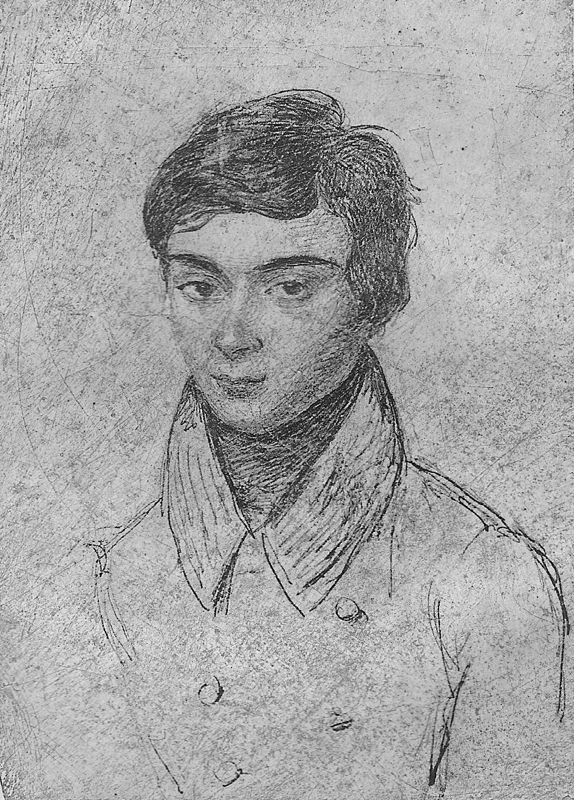

Высшая математика
Высшая математика — курс обучения в средних и высших учебных заведениях, включающий высшую алгебру и математический анализ.
Высшая математика включает обычно аналитическую геометрию, элементы высшей и линейной алгебры,
дифференциальное и интегральное исчисления, дифференциальные уравнения, теорию множеств,
теорию вероятностей и элементы математической статистики.
Часто используется в экономике и технике.
Является обязательным предметом в российских высших учебных заведениях, за исключением специальностей,
в которых различные разделы математики разнесены по разным дисциплинам.
Известные личности
 Нильс Хе́нрик А́бель (норв. Niels Henrik Abel; 5 августа 1802, Финнёй — 6 апреля 1829, Фроланн) — норвежский математик.
Нильс Хе́нрик А́бель (норв. Niels Henrik Abel; 5 августа 1802, Финнёй — 6 апреля 1829, Фроланн) — норвежский математик.Дата рождения 5 августа 1802
Место рождения Финнёй, Ругаланн, Норвегия, Датско-норвежская уния
Дата смерти 6 апреля 1829 (26 лет)
Место смерти Фроланн, Эуст-Агдер, Норвегия
Страна Норвегия
Научная сфера теория групп и математический анализ
Нильс Абель Хенрик – один из самых выдающихся математиков всего человечества. Он родился в норвежском городке Финней в семье пастора. Его мать происходила из купеческой семьи. Когда Нильсу исполнился один год, семейство переехало в город Гьеррестад.
Детские годы Абеля
Детство будущего математика нельзя было назвать счастливым: его здоровье было слабым, а родители постоянно пьянствовали и ругались. В 1815 году Абель Нильс Хенрик поступил в кафедральную школу в Осло. Семья будущего математика была очень бедной, поэтому Абель находился в учебном заведении на полном пансионе. Сначала он ничем не выделялся из общей массы школьников. При этом преподавателем математики на то время в школе был очень жестокий человек, который избивал учеников. Способности Абеля к математике впервые заметил учитель по имени Берт Михаэль Хольмбоэ.Учитель и ученик
Берт был очень заинтересован математикой, хорошо относился к ученикам и также умел их мотивировать. Хольмбоэ поощрял тех, кто занимался самостоятельно. Именно благодаря ему Абель впервые всерьез увлекся наукой. Преподаватель вспоминал, что Абель изучал курс математики с пылом, который может быть присущ только гению. Хольмбоэ очень поощрял желание Абеля заниматься, а также разрешал ему пользоваться изданиями из собственной библиотеки. Через весьма короткий срок Абель уже был знаком с основами математики. По собственному желанию будущий ученый буквально «проглатывал» работы Гаусса, Лакруа, Пуассона и Лагранжа.Загадка, интересовавшая математиков
Следующие два года с особым оптимизмом Абель принимается за решение сложнейших задач в математике. Одна из таких загадок уже давно привлекала ученых. Это были уравнения пятой степени, а также уравнения более высоких степеней. Для более простых уравнений формулы были известны уже давно. Правило решения уравнений четвертой степени было открыто математиком Феррари, третьей – Джероламо Кардано. Однако дальше продвинуться никто не мог. Несмотря на это, научное сообщество было уверено в принципиальной возможности решения проблемы. Ученые считали, что достаточно составить особую комбинацию из коэффициентов и радикалов, чтобы научиться решать эти уравнения. Однако проходило столетие за столетием, ученые посвящали целые жизни этой задаче, но она оставалась нерешенной.Жизнь в университете и помощь преподавателей
В 1820 году в семье Абеля случается трагедия: погибает отец. Его мать, сестра и шестеро братьев остаются практически в нищете. В 1821 году Нильс Хенрик Абель поступает в университет. Там его талант также замечается преподавателями, и они решают вскладчину собирать стипендию для бедного, но невероятно одаренного студента, чтобы не потерять его дар для науки. Несмотря на трудности и свой меланхолический характер, Абель был всегда приветлив и уживчив со всеми студентами, практически не имея врагов. Математика была настолько интересна ему, что он мог проводить за занятиями круглые сутки, доводя себя практически до физического истощения.Зимой 1822-1823 года Абель Нильс Хенрик написал первый серьезный научный труд. Он был посвящен интегрируемости дифференциальных уравнений. В качестве награды ему была присуждена государственная премия. Ни главы университета, ни норвежское правление не упускали из виду блестящий талант, которым обладал Абель Нильс Хенрик. Летом 1823 года у Абеля впервые появляется возможность осуществить путешествие за границы Норвегии. С помощью средств, которые собрали профессора университета, Абель отправился в Копенгаген. Путешествуя, математик знакомится с другими выдающимися умами того времени: О. Коши, А. Лежандром и другими. А в 1825 году он был командирован в Германию, где его ежемесячное пособие стало составлять 3168 франков. В 1826 году была опубликована статья Абеля, которая описывала процесс решения уравнений пятой степени. Это событие сразу же сделало его одним из величайших математиков во всем мире. Однако следующий труд ученого, который был передан Коши для рецензирования, потерялся в его бумагах. Коши смог найти работу Абеля лишь после кончины ученого. Если бы этого не произошло, Абель при жизни мог бы быть награжден большой академической премией. Так как этого не произошло, остаток своей жизни он провел в крайней нужде.
Дальнейшая работа
В Берлине Абель знакомится с еще одним исследователем – А. Креллем, который начинает издавать математический журнал. После успешной работы в Берлине Абель Нильс Хенрик возвращается на родину – в Христианию. Там его начинают интересовать вопросы алгебраических уравнений. За все это время печатается порядка десяти научных статей по математике, авторство которых принадлежит Абелю. В 1826 году на заседании Французской академии наук Нильс Хенрик Абель выступает с докладом о трансцендентных функциях в математике. Его выступление остается намеренно не замеченным французскими учеными, оно получило свое признание только после смерти математика.Достижения Абеля
Решение уравнений пятой степени – одно из главнейших открытий в математике, которое совершил Абель Нильс Хенрик. Достижения его состоят также в открытии множества теорем. Он также исследовал несколько алгебраических функций. Это направление исследований привело Абеля к открытию теории гиперэллиптических функций. Немало важных работ Абеля Нильса Хенрика касаются теории рядов.Абелевская премия
Так как математики не получают Нобелевской премии, в 2002 году правительством Норвегии для них была основана специальная премия, получившая название Абелевской. С 2003 года она каждый год присуждается выдающимся современным математикам. Ее денежный эквивалент составляет чуть менее миллиона долларов США. Эта премия была создана не только для того, чтобы награждать достойных исследователей, но и для популяризации математики среди подрастающего поколения. Среди ее лауреатов такие ученые, как Леннарт Карлесон, Джон Г. Томпсон, Михаил Громов, Жан-Пьер Серр. Также лауреатом Абелевской премии стал российский ученый Яков Синай. Он получил награду за вклад в изучение динамических систем, эргодическую теорию и математическую физику. 
Эвари́ст Галуа́ (фр. Évariste Galois; 25 октября 1811, Бур-ла-Рен, О-де-Сен, Франция — 31 мая 1832, Париж, Франция)
— французский математик, основатель современной высшей алгебры. Радикальный революционер-республиканец,
был застрелен на дуэли в возрасте двадцати лет.
Дата рождения 25 октября 1811
Место рождения Бур-ла-Рен
Дата смерти 31 мая 1832
Место смерти Париж, Франция
Страна Франция
Научная сфера математика
Дата рождения 25 октября 1811
Место рождения Бур-ла-Рен
Дата смерти 31 мая 1832
Место смерти Париж, Франция
Страна Франция
Научная сфера математика